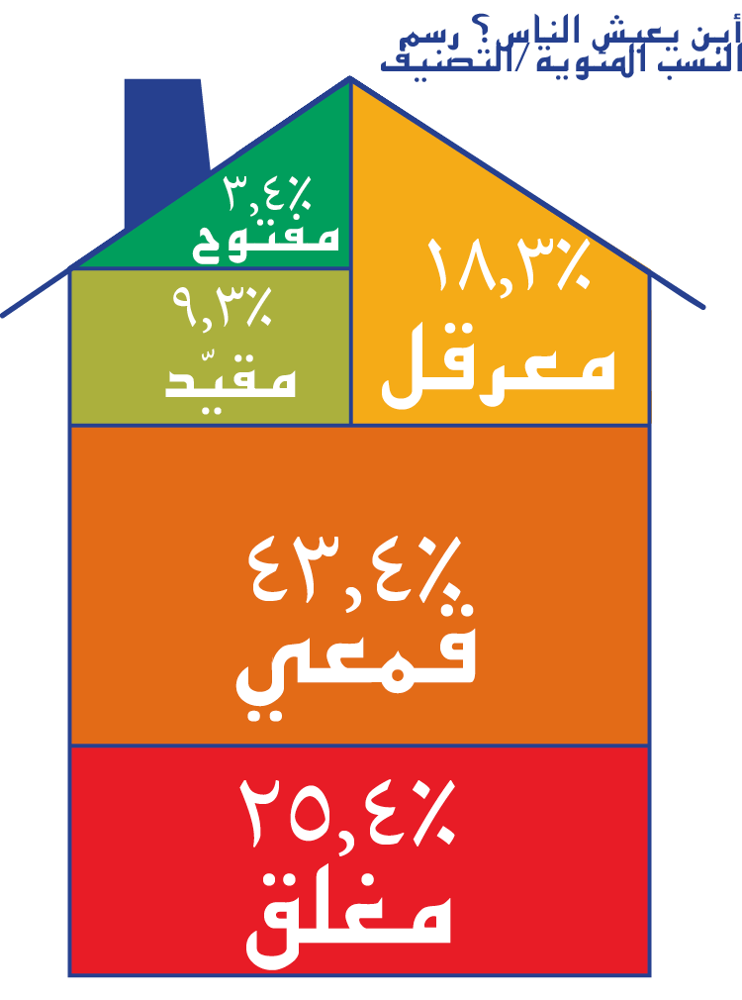
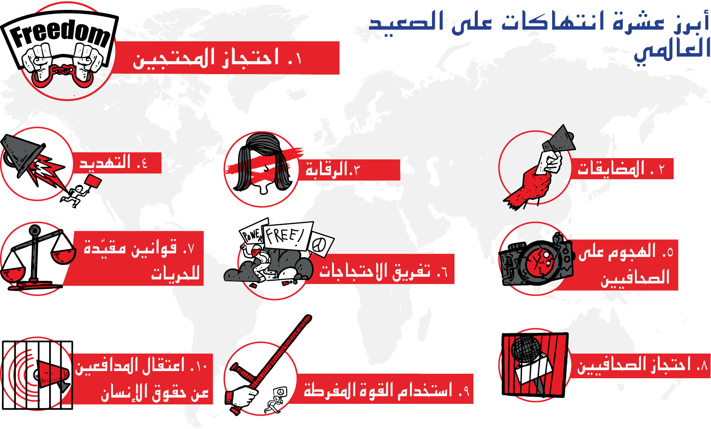

ما وضع الحريات المدنية في بلدك؟
كشف تقرير عالمي جديد بشأن الحريات المدنية عن تراجع 11 بلدا في التصنيف
تنزيل التقرير
- يعيش عدد متزايد من الأشخاص في بلدان "مغلقة" و"قمعية" و"معرقلة"
- تشمل البلدان التي تراجعت في التصنيف الولايات المتحدة الأمريكية والفلبين وغينيا وسلوفينيا والعراق
- تتمثل أبرز الانتهاكات في احتجاز المتظاهرين والرقابة والاعتداء على الصحافيين
- تدهورت حرية التعبير وحرية تكوين الجمعيات وحرية التجمع السلمي خلال كوفيد-19
يستمر تدهور الحريات الأساسية المتعلقة بتكوين الجمعيات والتجمع السلمي والتعبير في أنحاء العالم، وفقًا لتقرير جديد أطلقه سيفيكوس مونيتور، وهو تعاون بحثي لرصد الحريات الأساسية في 196 بلدًا. ويُظهر التقرير الجديد،سلطة الشعب تحت الهجوم لعام 2020، استمرار تزايد عدد الأشخاص الذين يعيشون في بلدان ذات قيود كبيرة على الفضاء المدني عامًا بعد عام.
 وتعيش الآن نسبة 87 في المائة من سكان العالم في بلدان تصنَّف باعتبارها "مغلقة" أو "قمعية" أو "معرقلة"، وهي زيادة تفوق 4 في المائة منذ السنة الماضية. ويعيش أكثر من الربع في بلدان تحتل أسوأ تصنيف، أي مغلقة، حيث يُسمح بشكل اعتيادي للجهات الفاعلة من الدول وغير الدول بسجن الناس وإيذائهم وقتلهم بسبب محاولة ممارسة حرياتهم الأساسية. و تندرج الصين والمملكة العربية السعودية وتركمانستان وعشرون (20) بلدا آخر ضمن هذه الفئة.
وتأثرت الحريات المدنية عالميا تأثرا شديدا بجائحة كوفيد-19. وفي أوقات الأزمات، من الأساسي توفير فضاء للحوار المفتوح والبنّاء بين الحكومات والمجتمع المدني، والوصول أيضا إلى معلومات سريعة وموثوقة. ومع ذلك، تظهر أبحاثنا أن الحكومات سلكت طريقا مختلفا وتستخدم الجائحةَ كفرصة لتقديم قيود جديدة أو تطبيقها على الحريات المدنية.
وتظهر بياناتنا أن احتجاز المتظاهرين والاستخدام المفرط للقوة ضدهم يشكلان أكثر الأساليب شيوعا والتي استعملتها السلطات الحكومية لتقييد الحق في التجمع السلمي. ومع أن هذا الأمر كان انتهاكا شائعا خلال السنة الماضية، فإن السلطات كانت تستخدم الجائحة كتبرير لمواصلة تقييد هذا الحق. وكانت أيضا الرقابة والاعتداءات على الصحافيين ومضايقة المدافعين عن حقوق الإنسان وتهديدهم أساليب شائعة جرى توثيقها خلال السنة.
وقالت ماريانا بيلالبا باريتو، وهي رئيسة البحث في مجال الفضاء المدني لدى منظمة التحالف العالمي من أجل مشاركة المواطنين (سيفيكوس)، إن "استخدام الاعتقال كأسلوب رئيسي لمنع الاحتجاجات لا يظهر سوى نفاق الحكومات التي تستخدم كوفيد-19 كذريعة لقمع الاحتجاجات؛ فمن الأرجح أن ينتشر الفيروس في الأماكن الضيقة مثل السجون. ويعكس بحثنا أزمة الفضاء المدني المتفاقمة في أرجاء العالم، ويبرز كيفية استخدامِ الحكومات الجائحةَ كتبريرٍ لمواصلة تقييد الحقوق، بما في ذلك سن تشريعٍ لتجريم الخطاب".

وتراجع تصنيف أحد عشر بلدا هذا العام وتمكّن بَلَدان منها فقط من تحسين تصنيفهما. ويساور سيفيكوس مونيتور القلق بوجه خاص إزاء القيود المفروضة على الفضاء المدني في الأمريكتين، حيث تراجع تصنيف أربعة بلدان، وهي: كوستاريكا وشيلي والإكوادور والولايات المتحدة الأمريكية. ويُعد أيضا تدهور الفضاء المدني في غرب أفريقيا مثيرا للقلق، مع تغير تصنيف أربعة بلدان -كوت ديفوار وغينيا والنيجر وتوغو- من فضاء معرقل إلى قمعي.
وهناك قلق متزايد بشأن تراجع الحقوق الديمقراطية والمدنية في أوروبا، مع تراجع تصنيف سلوفينيا أيضا. ويظل تدهور الظروف المحيطة بالفضاء المدني في آسيا مصدر قلقٍ في ظل تراجع تصنيف الفلبين من معرقل إلى قمعي. ويُضاف بلدٌ آخر إلى القائمة في منطقة الشرق الأوسط وشمال أفريقيا، التي تُصنَّف معظم بلدانها في فئة الفضاء المغلق، تزامنا مع تراجع تصنيف العراق من فضاء قمعي إلى مغلق.
وحققت جمهورية الكونغو الديمقراطية والسودان تحسنا محدودا لكنه حظي بالترحيب، حيث تقدَّما في تصنيفهما من فضاء مغلق إلى قمعي.
وقالت بيلالبا باريتو: "تبدو صورة الحريات المدنية هذا العام في معظم المناطق قاتمةً. ففي وقت توجد الحاجة فيه إلى الحريات المدنية أكثر من أي وقت مضى لمساءلة الحكومات، يتواصل تقييد الفضاء للقيام بذلك. فمن المهم للغاية أن تعمل الحكومات التقدمية بشكل وثيق مع المدافعين عن حقوق الإنسان والمجتمع المدني في المضي قدما لوقف هذا التدهور السريع والتصدي للقوى الاستبدادية المؤثرة".
ولم تردع القيودُ المدافعينَ عن حقوق الإنسان والمجتمعَ المدني عن مواصلة العمل والتأقلم والمقاومة. وكانت الاحتجاجات الواسعة في كثير من الأحيان العامل الرئيسي الذي أدى إلى تغييرات إيجابية. ففي شيلي، أجبرت الاحتجاجات الجماهيرية الحكومة على إجراء استفتاء لتغيير الدستور. وفي الولايات المتحدة الأمريكية، تعهدت بعض الولايات بتفكيك قوات الشرطة التابعة لها أو إدخال إصلاح هيكلي عليها عقب احتجاجات حركة حياة السود مهمة. وأما في ملاوي، فقد أفضت شهور من الاحتجاجات إلى إعادة تاريخية للانتخابات الرئاسية وانتقال السلطة.
وتتعاون أكثر من عشرين منظمة على مستوى سيفيكوس مونيتور لتقديم قاعدة الأدلة اللازمة لاتخاذ إجراءات من أجل تحسين الفضاء المدني في جميع القارات. ونشر سيفيكوس مونيتور ما يزيد عن 500 مستجدٍّ عن الفضاء المدني خلال السنة الماضية، وجرى تحليلها في تقرير سلطة الشعب تحت الهجوم لعام 2020. ويُصنَّف الفضاء المدني في 196 دولة إما بكونه مغلقا أو قمعيا أو معرقلا أو مقيّدا أو مفتوحا، بناءً على منهجية تجمع بين العديد من مصادر البيانات المتعلقة بحرية تكوين الجمعيات وحرية التجمع السلمي وحرية التعبير.